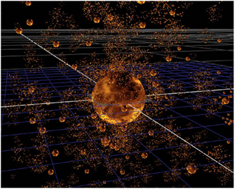

如果你想让你现有的粒子发射更多的粒子，你应该转向粒子棋子。
| 1。 | 将 ParticleSpawn 节点连接到粒子流 (例如 ParticleEmitter 输出)。所有发射的粒子现在开始产生更多的粒子。 |
| 2. | 调整 ParticleSpawn 控件。大多数 ParticleSpawn 控件与 ParticleEmitter 节点中的控件相同 (请参见 发射粒子 )，只有少数例外: |
• 转移 速度 -调整此选项以将初始发射器的速度传输到粒子。如果将其设置为 0，则不会向生成的粒子传输速度。在值为 1 时，全速从始发粒子转移。
• 保护 的 质量 -检查是否希望从原始粒子的质量中移除衍生粒子的质量。如果粒子的质量在帧的末尾为零，它就会被删除。
• 保护 的 动量 -检查一下，从原始粒子中减去衍生粒子的动量，与牛顿第三运动定律一致。
• 对齐 速度 到 方向 的 运动 -检查以使速度与粒子的运动方向对齐。
• 继承 颜色 -检查以从原始粒子中获取粒子颜色。其他的颜色是由 颜色 控制。
|
 |
| 产生粒子。 |
|
|